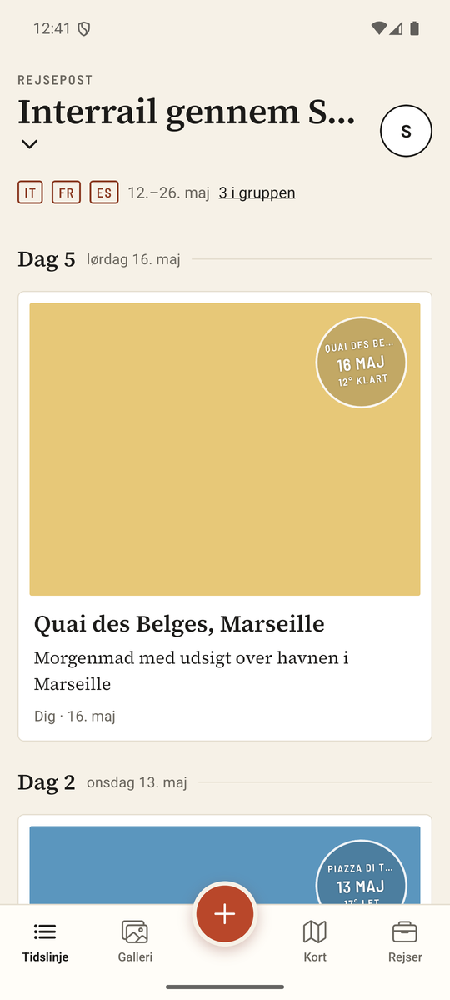
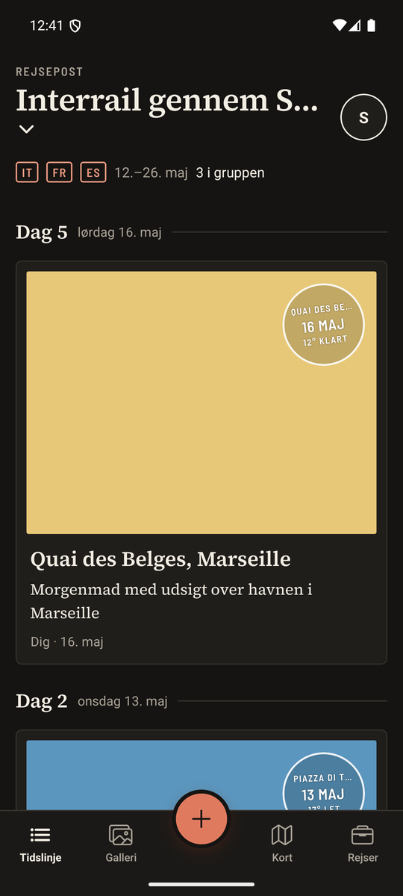
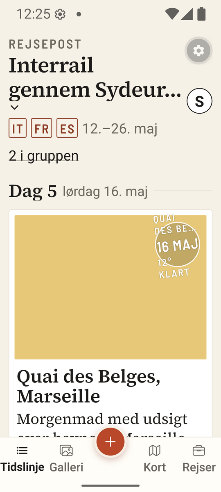
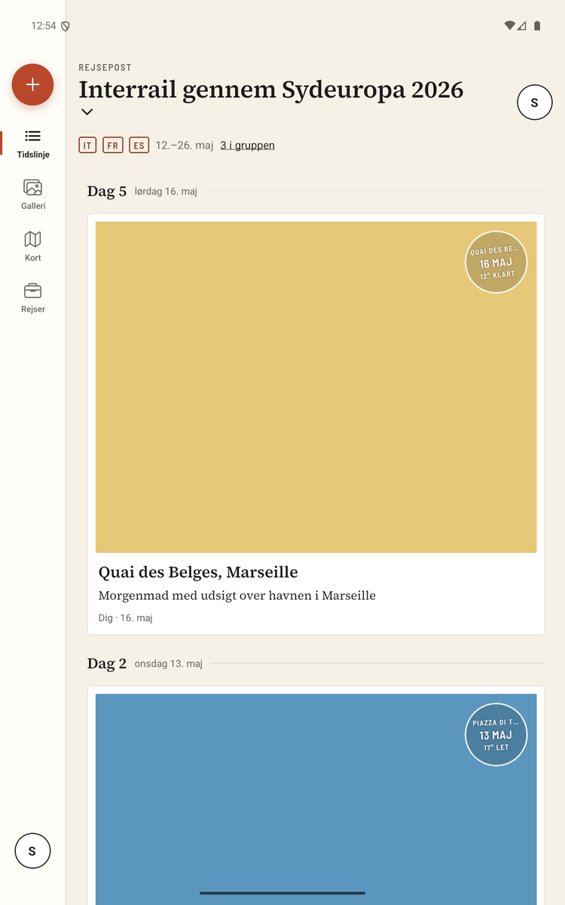
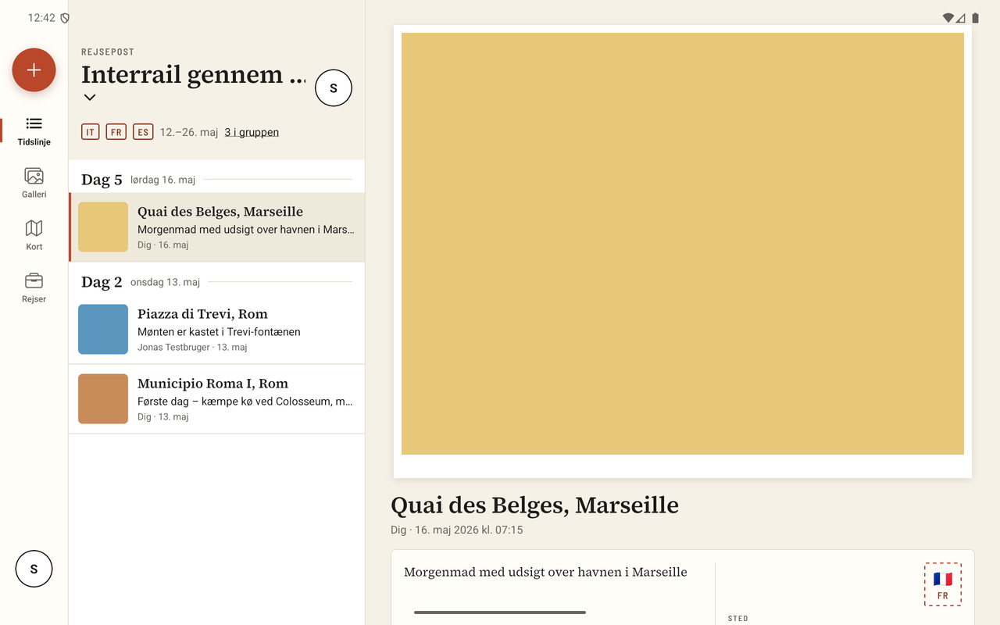
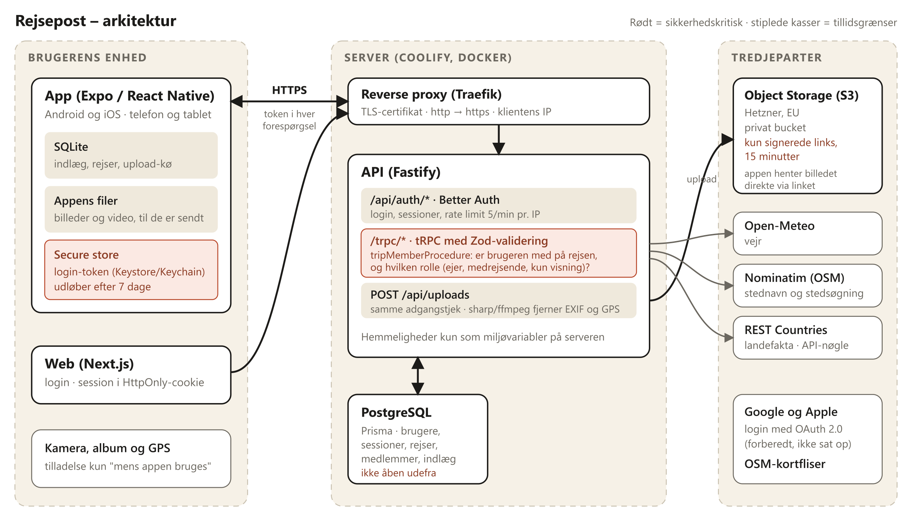

Problem. På en rejse ender billederne spredt på flere telefoner, og bagefter kan man ikke huske, hvor og hvornår de blev taget, eller hvordan vejret var. I udlandet er mobildata tit dyrt eller ustabilt, så en app, der kræver net i øjeblikket, bliver ikke brugt.
Brugergruppe. Unge og voksne, der rejser sammen: studieture, venneture og familieferier. Der er tre slags brugere på en rejse, og de svarer til appens roller: den, der opretter rejsen (ejer), dem, der rejser med og lægger billeder op (medrejsende), og familien derhjemme, som kun skal kunne se med (kun visning).
Løsning. Rejsepost er en rejsedagbog i React Native (Expo) til Android og iOS. Man tager et billede, og appen tilføjer selv sted, vejr og land ud fra position og tidspunkt. Indlæg gemmes først på telefonen og sendes, når der er net. Hver bruger har sin egen konto, og en rejses data tilhører rejsens medlemmer. Indlæg kan oprettes, læses, rettes og slettes gennem API'et.
Wireframes for telefon (compact) og tablet i landskab (expanded) ligger i kravspecifikationen, side 7–10. Det færdige design følger dem i opbygning, men har fået et udtryk som et postkort (papirfarve, blæk og poststempel-rød), og profilen er flyttet fra bundbaren til en avatar i headeren, så der er plads til "+" i midten.
Navigationen vælges ud fra vinduets bredde (useBreakpoint), ikke ud fra enhedstypen, så en foldbar telefon og et delt skærmbillede også får det rigtige layout:
Alle farver er tokens i én fil (lib/palette.ts) med et lyst og et mørkt sæt. Komponenterne henter dem med usePalette() og kender ikke selve farverne. Temaet følger telefonens indstilling.
Det, man gør oftest, ligger nederst, hvor tommelfingeren når: "+" til nyt indlæg sidder midt i bundbaren, fanerne ligger ved siden af, og skærmenes primære knap ("Gem sted", "Tilslut rejse", "Opret rejse") står nederst. Sjældne og farlige handlinger (profil, log ud, slet) ligger øverst eller sidst på skærmen. Fra start til gemt billede er der tre tryk.






Appen og serveren er skrevet i TypeScript i ét monorepo. tRPC deler typerne mellem app og API, og Zod-skemaerne i packages/shared bruges begge steder, så samme validering gælder i formularen og på serveren. Filer går gennem en almindelig REST-route, fordi tRPC ikke egner sig til upload. Billeder ligger i en privat bucket; API'et udleverer kun signerede links, der virker i 15 minutter, og kun til rejsens medlemmer. Kald til vejr og stednavne går gennem serveren, så API-nøgler bliver dér, og tjenesternes grænser kan overholdes samlet.
Offline. Et indlæg skrives altid først til SQLite på telefonen og lægges i en upload-kø. Køen sender ét indlæg ad gangen, når der er net. Indlæggets id laves i appen, og serveren gemmer med upsert, så et gentaget forsøg aldrig giver dubletter.
Appen håndterer private billeder (kan vise personer), positioner, navne og e-mailadresser. Truslerne er fundet med STRIDE (Spoofing, Tampering, Repudiation, Information disclosure, Denial of service, Elevation of privilege) og koblet til OWASP Top 10 (2021), OWASP API Security Top 10 (2023) og OWASP Mobile Top 10 (2024).
| # | Trussel | STRIDE | OWASP | Modforanstaltning |
|---|---|---|---|---|
| 1 | En bruger ændrer et rejse- eller indlægs-id i en forespørgsel for at se, rette eller slette andres data | I, T, E | API1 Broken Object Level Authorization · A01 Broken Access Control | Alle procedurer, der rører en rejse, bygger på tripMemberProcedure, som slår medlemskabet op i databasen ud fra sessionen. Svaret er "findes ikke", så id'er ikke kan bekræftes. Id'er er UUID'er. Rettelse og sletning kræver desuden, at man er forfatteren. Automatisk testet. |
| 2 | En medrejsende eller en med "kun visning" kalder ejerens funktioner (slet rejse, lav koder) eller lægger billeder op | E | API5 Broken Function Level Authorization · A01 | Rollen læses på serveren: tripOwnerProcedure og tripContributorProcedure; upload-routen svarer 403 for "kun visning". At appen skjuler knapperne, regnes ikke som sikkerhed. Automatisk testet. |
| 3 | Gæt af adgangskoder eller invitationskoder (6 tegn) | S | A07 Identification and Authentication Failures · API2 Broken Authentication | Login: højst 5 forsøg pr. minut pr. IP, adgangskode på mindst 8 tegn, hashet med scrypt. Koder: 10 forsøg pr. bruger og 20 forkerte pr. IP pr. 10 minutter. Klientens IP kan ikke forfalskes med en header (TRUST_PROXY). Automatisk testet. |
| 4 | Login-tokenet stjæles fra en tabt telefon eller aflyttes på et åbent wifi | S, I | M9 Insecure Data Storage · M5 Insecure Communication · A02 Cryptographic Failures | Tokenet ligger i Keystore/Keychain (expo-secure-store), ikke i almindelig lagring, og udløber efter 7 dage uden brug. Al trafik er HTTPS med HSTS; et build nægter at tale med en http://-server. Webcookien er HttpOnly, Secure og SameSite=Lax. |
| 5 | Hemmeligheder (database, auth-secret, S3-nøgler) havner i Git eller i appen | I | A05 Security Misconfiguration · M1 Improper Credential Usage | Hemmeligheder findes kun som miljøvariabler på serveren. Appen kender kun API'ets adresse. .env er gitignored, og historikken er scannet med gitleaks (43 commits, ingen fund ud over en test-værdi). Serveren blokerer svar, der indeholder en hemmelig værdi (varlock). |
| 6 | Position afsløres gennem billedets metadata, når billeder deles | I | M6 Inadequate Privacy Controls | Serveren fjerner EXIF og GPS fra billeder (sharp) og videoer (ffmpeg) ved upload. Postkort, der deles ud af appen, er et nyt billede uden metadata. Automatisk testet. |
| 7 | Fremmede henter billeder direkte fra lageret eller gennem et gammelt link | I | A01 Broken Access Control | Bucket'en er privat (usigneret link giver 403). Links signeres pr. forespørgsel, virker i 15 minutter og gives kun til medlemmer. |
| 8 | Ondsindet eller kæmpestor fil uploades, eller API'et overbelastes | T, D | API4 Unrestricted Resource Consumption · A03 Injection | Filens indhold valideres (ikke kun filtypen), højst 15 MB pr. billede og 30 sekunders video, rate limit på upload (60/min) og API (300/min). Alt input valideres med Zod, og Prisma parametriserer SQL. |
| 9 | En bruger nægter at have slettet eller ændret noget | R | A09 Security Logging and Monitoring Failures | Serveren logger metode, sti og IP for hver forespørgsel (uden query-streng, så tokens og koordinater ikke havner i loggen). Kendt mangel: der er ingen audit-log pr. bruger. |
Største trussel er nr. 1. Den er let at udføre (ret et id i en forespørgsel), den rammer det mest følsomme (private billeder), og den opstår, hvis blot ét endpoint glemmer tjekket. Derfor ligger tjekket ét sted, som alle rejse-procedurer skal bygge på, og derfor findes der en test, der prøver hver procedure som en fremmed bruger.
TripMember, aldrig ud fra noget, klienten sender. Roller: ejer, medrejsende, kun visning..env.schema beskriver variablerne uden værdier og markerer, hvilke der er følsomme.http:// sendes videre til https://.Kodeeksempel, der stopper trussel 1 (packages/api/src/trip-access.ts):
export async function assertTripMember(db, userId, tripId) {
const membership = await getTripMembership(db, userId, tripId); // slår (tripId, userId) op i TripMember
if (!membership) {
// Samme svar, uanset om rejsen findes: en fremmed kan ikke gætte sig til gyldige id'er.
throw new TRPCError({ code: "NOT_FOUND", message: "Rejsen findes ikke" });
}
return membership; // indeholder rollen: owner | member | viewer
}
userId kommer fra sessionen på serveren, og tripId fra forespørgslen. Ændrer bruger B id'et til bruger A's rejse, findes der ingen række i TripMember, og kaldet stopper, før der læses eller skrives data.
Automatiske tests: 199 tests (Vitest) kører mod den rigtige server og en testdatabase. De vigtigste:
| Område | Hvad der testes |
|---|---|
| Adgang til andres data | To brugere, Sara og Jonas. Jonas prøver hver procedure på Saras rejse (hent, ret og slet rejse og indlæg, medlemsliste, koder, upload) og får "findes ikke"; uden login gives 401. Kontrol: slås adgangstjekket fra, fejler 9 af testene, så de fanger faktisk fejlen. |
| Roller | "Kun visning" kan læse, men får afvist indlæg, upload, koder og rejsens indstillinger. Kun ejeren kan lave og stoppe koder. Kun forfatteren kan rette og slette et indlæg. |
| Login og sessioner | 429 efter 5 forkerte logins; IP-headeren kan ikke forfalskes; session udløber efter 7 dage, og en udløbet session afvises; cookie-attributter. |
| Upload og privatliv | EXIF og GPS er fjernet fra billeder og video; falske filer (415) og for store filer (413) afvises; slettede indlæg ryddes for tekst og position. |
| Synkronisering | Appens synkroniseringsmotor kører mod serveren: offline til online uden dubletter, retry uden ny upload, rettelser og sletninger offline. |
| UI og transport | Kontrast for alle farvepar i begge temaer; HTTPS-kravet i appen; HSTS. |
Manuelle tests: flytilstand (3 indlæg oprettet offline, appen genstartet, alle sendt uden dubletter, da nettet kom tilbage), trykfelter målt på emulatoren, 200 % skrift, lyst og mørkt tema, telefon samt tablet i portræt og landskab. Ikke testet: brugertest med andre personer, skærmlæser, iOS og en fysisk telefon.
Arbejdsfordeling. Projektet er lavet af én person, så planlægning, design, kode, test og dokumentation er mit eget ansvar.
Hvad gik godt. At lægge adgangstjekket ét sted og skrive testen med to brugere tidligt betød, at nye funktioner (invitationskoder, deling til visning) fik sikkerheden med fra start. Offline-køen med id'er lavet i appen gjorde synkroniseringen simpel nok til at kunne testes automatisk.
Hvad gik mindre godt. Stakken har mange dele, og opsætning og native builds på Windows tog mere tid end planlagt. De alvorligste fejl blev først fundet, da appen kørte på en enhed (fx at upload af billeder fejlede på alle enheder), fordi testene kører i Node og ikke dækker appens skærme. Webversionen, brugertesten og skærmlæser-testen blev ikke nået, og jeg prioriterede video og postkort, som var mindre vigtige. Næste gang ville jeg teste på en fysisk telefon fra første uge og lave brugertesten, før jeg byggede ekstra funktioner.
Brug af AI. Jeg har brugt en AI-kodeassistent (Claude Code) gennem hele projektet: til at foreslå og skrive kode og tests, til at finde fejl, til en sikkerhedsgennemgang af API'et og til udkast til dokumentation og arkitekturdiagram. Kravene, teknologivalgene, datamodellen og prioriteringen har jeg selv besluttet, og jeg har læst og afprøvet koden, før den blev committet. AI'en tog flere gange fejl, fx i antagelser om biblioteker, og fejlene blev kun fundet ved at køre testene og appen. Jeg kan forklare den afleverede kode.